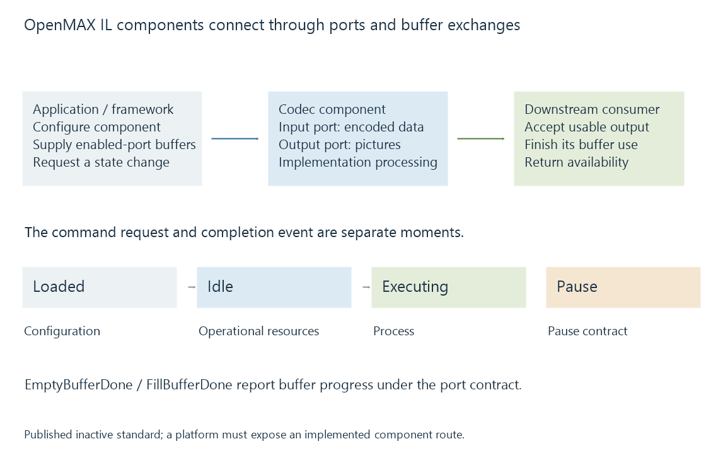

OpenMAX IL components, ports and state
OpenMAX IL defines a multimedia component interface whose ports, buffer exchanges and asynchronous state transitions coordinate supported processing implementations.
OpenMAX Integration Layer, or OpenMAX IL, defines a component interface for multimedia processing. A decoder, encoder or another processor presents ports, configuration, state and buffer-exchange behavior through that contract.
Khronos now lists OpenMAX among its inactive standards. The published interface remains useful for interpreting existing implementations and older OMX-named media routes.
Ports describe the component’s data relationship
An input port accepts the media type configured for it; an output port supplies the component's resulting type. A decoder's compressed input and picture output have different configurations.

The application or a suitable tunnel between components coordinates the buffers. Compatible ports and implementations determine whether those objects can be shared.
An OMX component name identifies an implementation interface. It does not guarantee that all its operations use dedicated hardware or that it accepts every profile of a codec.
The component state controls valid work
Some central states in the specification are:
| State | Role in the lifecycle |
|---|---|
| Loaded | Component exists with its configuration-stage context |
| Idle | Operational resources and enabled-port requirements are established |
| Executing | Component performs the supported processing |
| Pause | Processing is paused under the interface's state rules |
A requested transition has conditions. For example, the move to Idle can depend on the enabled ports' required buffers being supplied.
Sending a state-change command is therefore different from receiving its completion event. The client must not treat a queued command as proof that the new state's operations are already permitted.
Buffers return through defined callbacks
EmptyThisBuffer submits an input buffer, while its corresponding EmptyBufferDone callback reports the return of that buffer under the contract.
The output side similarly uses FillThisBuffer and FillBufferDone. Completing an input use does not universally mean that exactly one final output has already appeared: decoding, buffering and frame-order behavior can give a more complex relationship.
The caller preserves the buffers and handles their lifecycle until the interface returns the relevant use.
An exposed route is implementation-specific
OpenMAX IL standardizes a contract, not a requirement that every current operating system or device must use it. Modern Android MediaCodec implementations can have other platform backends.
Emby's documentation includes OpenMAX/OMX in its platform-route context. A particular version/build and initialized component establish whether a session actually exercises that interface.
See Also
- Android MediaCodec and buffer ownership
- Rockchip Media Process Platform (RKMPP)
- How media APIs connect applications to hardware
- Hardware frame surfaces and GPU contexts